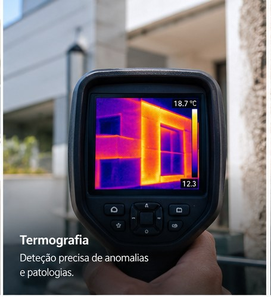
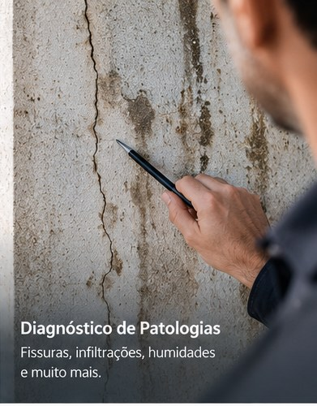

01
Vistoria técnica
Observação das condições existentes e identificação de anomalias relevantes.
PERITAGEM TÉCNICA · TERMOGRAFIA
A PeritOne realiza vistorias e avaliações técnicas a obras e edifícios, utilizando a termografia como ferramenta complementar de diagnóstico quando adequada à situação.

SERVIÇOS
Observação das condições existentes e identificação de anomalias relevantes.
Análise de fissuras, infiltrações, humidades, degradação e outras manifestações.
Leitura de diferenças de temperatura como apoio à deteção e interpretação de determinadas anomalias.
Registo fotográfico, observações, conclusões e recomendações de forma clara e organizada.
TERMOGRAFIA
A termografia permite observar padrões térmicos e diferenças de temperatura na superfície dos elementos analisados. Em contexto adequado, pode apoiar a investigação de humidades, infiltrações, pontes térmicas e outras anomalias.
A termografia é uma ferramenta complementar: a interpretação deve ser feita em conjunto com a observação do edifício, as condições existentes e outros elementos técnicos disponíveis.

PATOLOGIAS
Uma fissura, mancha de humidade ou infiltração é um sinal que deve ser analisado no seu contexto. A avaliação técnica procura caracterizar a anomalia e reunir informação que ajude a perceber a sua origem e extensão.
CONTACTO
Algarve e Alentejo.